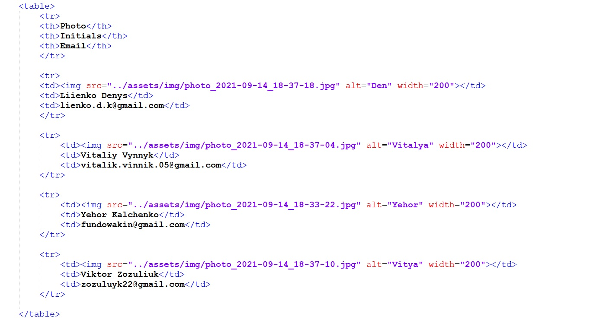

ЗВІТИ З ЛАБОРАТОРНИХ РОБІТ
З ДИСЦИПЛІНИ "ІНТЕРНЕТ-ТЕХНОЛОГІЇ ТА ПРОЕКТУВАННЯ WEB-ЗАСТОСУВАНЬ"
Бригада №6 | Студенти групи ІС-02
СКРІНШОТ ТАБЛИЦІHTML-код ТАБЛИЦІТЕОРЕТИЧНА ЧАСТИНАТЕГ TABLEАтрибути
ТЕГ TRАтрибути
ТЕГ TDАтрибути
|
©Розроблено студентами групи ІС-02